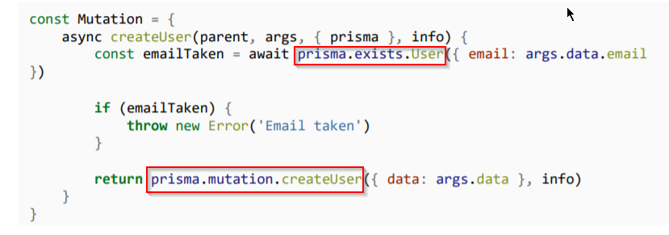

Now since we have access to prisma in our resolver function. We can make our custom resolver functions using prisma.

We have got access to all the prisma types like :
1. prisma.query
2. prisma.mutation
3. prisma.exists
4. prisma.subscription